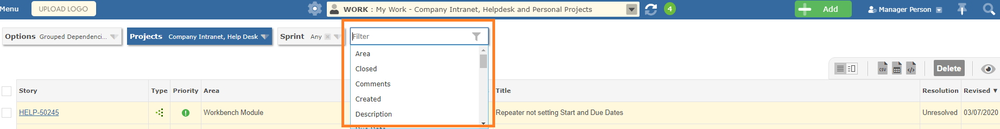

Gemini has both search and filter. If you click in the filter, Gemini will give you the option to instantly filter within the project(s) you have selected.
You can type a word in the filter, in which case Gemini will filter the title, description and comments for items matching the word
Both the above work within the project(s) filter selection.
If you search from the top right search icon, Gemini searches all projects you have access to, in the same fields as a keyword search
Important If you search using the top right global search, when Gemini returns you will no longer be in a Workspace because matching items do not have to match the filter you started with.

The grid will refresh with live results every time you select or un-select a filter value.